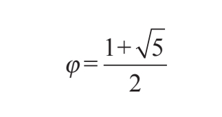
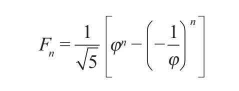
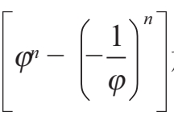
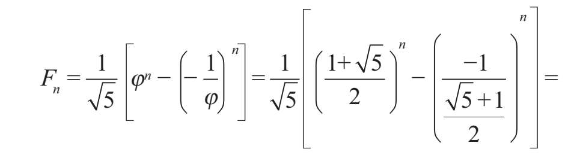
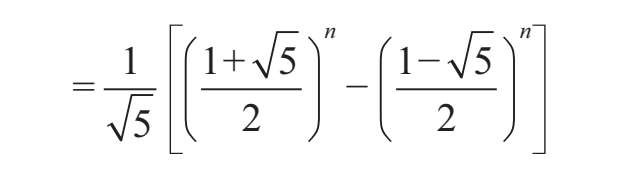

斐波那契的《计算之书》篇幅很长，记载了作者在旅行途中遇到的算数和代数问题，十分有趣。斐波那契意图证明印度-阿拉伯十进制及其数字符号的用处，并支持将其引入欧洲。书中正文第一段就讲到了我们现在所使用的数字，这是数字首次在西方的历史上出现。
九个印度数字分别是：9、8、7、6、5、4、3、2、1。
用这9个数字和阿拉伯人称为零（zephyr）的符号0可以写出任何数字。我们会在下面加以论证。数是单位之和，可以通过累加无限增大。首先由单位1组成了1—10；其次由单位10组成了10—100的数；然后由单位100组成了100—1000的数……通过这样无限次的累加，任何数字都可以由之前的数字组合而成。写数字时，第一位在右边。第二位在第一位的左边。
斐波那契的“印度”数字属于印度-阿拉伯计数制。他按照阿拉伯文的书写方向从右向左写。该计数制的变革性不仅仅在于实践。斐波那契在当时还引入一个非常强大的概念，那就是“零”。
《计算之书》第十二章中出现了兔子的繁殖问题，斐波那契正是因此为后世所铭记。下面我们展示书中的原文，其中包括他在空白处做的笔记。
某人在围栏里养了一对兔子并且想知道在一年中，这对兔子能够繁殖出多少对兔子。假设一对兔子每月可以产下一对幼兔，每一对幼兔都可以在出生后的第二个月开始繁殖。
当第一对兔子在第一个月产仔时，该男子的兔子数翻了一番，所以他在一个月内拥有2对兔子。
第二个月，2对兔子中的其中一对，也就是最开始的一对生产，这个月一共有3对兔子；第三个月，上个月怀孕的2对兔子生产，所以新生的2对兔子加上之前的3对，这个月一共有5对兔子；第四个月，3对怀孕的兔子生产，这个月一共有8对兔子，其中的5对兔子怀孕；第五个月，5对怀孕的兔子生产，加上之前的8对兔子一共有13对兔子；第六个月，5对刚出生的兔子不交配，但另外8对怀孕的兔子生产，因此这个月有21对兔子；第七个月，新生的13对兔子加上之前的21对，这个月一共有34对兔子；第八个月，新生的21对兔子加上之前的34对，这个月一共有55对兔子；第九个月，新生的34对兔子加上之前的55对，这个月一共有89对兔子；第十个月，新生的55对兔子加上之前的89对，这个月一共有144对兔子；第十一个月，新生的89对的兔子加上之前的144对，这个月一共有233对兔子。第十二个月，兔子的总数为新生的144对兔子加上之前的233对。因此到了年底，由第一对兔子开始在一年之内总共繁殖了377对兔子。
开始：1对
第一个月：2对
第二个月：3对
第三个月：5对
第四个月：8对
第五个月：13对
第六个月：21对
第七个月：34对
第八个月：55对
第九个月：89对
第十个月：144对
第十一个月：233对
第十二个月：377对
我们可以从旁边的笔记看出如下规律：将第一个数字与第二个数字相加，即1加2，然后第二个数字加第三个数字，第三个数字加第四个数字，第四个数字加第五个数字，依此类推，直到第十一个数字加第十二个数字，即144加233，最终得到了刚才的结果377。随着月份的无限增加，这个数字还会继续增大。
在这个问题中出现的一系列数字以及随着这些数字增大而形成的比例后来被人们称为斐波那契数列，然而斐波那契不会知道这个数列用了他的名字，甚至直到许多个世纪后他才得到了“斐波那契”这个绰号。事实上，开普勒本人在1611年的一份出版物中提到过“皮萨诺数”（Pisano's numbers），他用一种复杂的方法描述了各数之间的比例：“5和8的比，8和13的比，13和21的比。”
100多年后，雅克·比内（1786—1856）创造的公式可以求出斐波那契数列中的任意项，并且能够确定任意项在数列中的位置。计算这一公式的方法有些复杂，所以我们在此只做简要介绍，然后用例子证明它的有效性。
显然斐波那契数列的定义由递归算法而来，也就是我们必须计算出该数列的前几项才能得到特定的项。如果斐波那契数列的各项由下面的等式来定义：
F0=0
F1=1
Fn=Fn-1+Fn-2 para n=2,3,4,5……
那么这些等式确定的递归关系为
Fn+2-Fn+1-Fn=0
感兴趣的读者可以去阅读原书的内容，进而一步一步地知道Fn+1/Fn的比值及其极限，也就是Φ或黄金比例。读者在书中还会找到黄金比例的表达式

这是后面许多数学计算的基础。比内得到的公式为

计算过程相当辛苦复杂，我们在此就不予以展示了。
将Φ值代入

就可以得到含有实数的公式。
